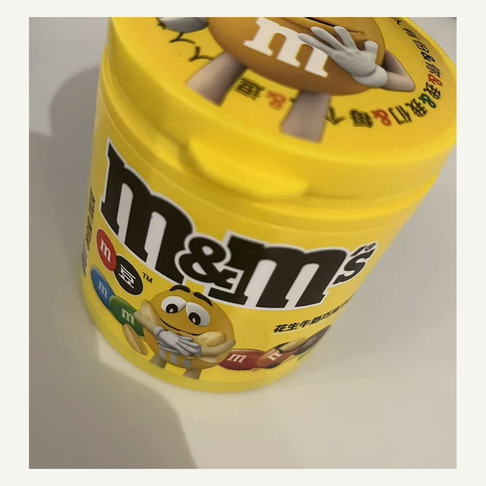
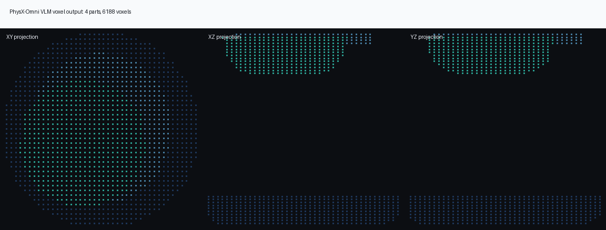

图像理解与部件拆分
Qwen2.5-VL 读取输入图像，输出对象名、部件、材料/尺度描述、group_info 以及每个部件的 template RLE。
1vlm_demo.pybasic_info.txtcoord_*.txt
这套材料的核心任务是说明：PhysX-Omni 如何从单张图像推断对象部件、体素结构、几何 mesh、材料与关节， 再把它们装配成可进入 MuJoCo/URDF 工作流的资产；以及这个链路在官方 demo 和真实 M&M's 高罐图上实际表现如何。
每一步都对应本地 Markdown；有 Notebook 的章节同时提供 Jupyter 版本。
下面按真实运行链路组织，不按论文段落顺序组织。看代码时也应沿这条链路走。
Qwen2.5-VL 读取输入图像，输出对象名、部件、材料/尺度描述、group_info 以及每个部件的 template RLE。
1vlm_demo.pybasic_info.txtcoord_*.txt把 template-based RLE 解码成 64³ 稀疏坐标。这里决定了“部件有没有体积”和“体积是否被压扁”。
decode_voxel_2drle_by_z()ind_*.npyallind.npy将每个部件的稀疏坐标和条件图像送入 3D decoder，生成 textured GLB/OBJ/贴图。
2infer_geo.pydecoder_each.pyto_glb()把部件、group_info、材料与关节假设写入 URDF 和 MuJoCo XML，形成可被仿真器消费的资产入口。
3jsongen_update.pybasic.urdfbasic.xml这里对应 Step 3 和 supporting notes，重点看“论文说法”和“代码实际承载点”是否一致。
论文把复杂 3D 结构压成可由 VLM 生成的文本序列。好处是输出接口简单；风险是分辨率、拓扑复杂度和长序列稳定性。
打开精讲Bench 覆盖材料、尺度、affordance、运动学、描述一致性与渲染质量。关键争议在于 VLM judge 的稳定性和可复现性。
打开精讲VLM 部件识别、RLE 体素、TRELLIS decoder、URDF/XML 装配彼此串联。M&M's 高罐偏矮就是体素阶段误差传到几何阶段的例子。
打开精讲下面是最应该先看的文件。前端里的路径都指向本地 checkout，不再只给抽象描述。
bash reproduce_quality.sh
# 关键环境变量在脚本内设置：
# DINO_LOCAL_REPO=/home/yjl/.cache/torch/hub/facebookresearch_dinov2_main
# ATTN_BACKEND=xformers
# SPCONV_ALGO=native
# PYTORCH_CUDA_ALLOC_CONF=expandable_segments:True这里区分“官方参考链路闭环”和“真实用户图片实测”。两者不能混为同一个质量结论。

已完成 VLM/RLE -> 几何贴图解码 -> URDF/XML 结构转换；本地输出包含 basic_info.json、basic.urdf、basic.xml、7 个 GLB/OBJ/贴图和 voxel preview。
原图只有盖子非空，2237 voxels；body-focus 裁剪后变为 6188 voxels，罐身、盖子、瓶颈都非空。但主罐 bbox 仍偏扁，所以你看到“矮”是合理观察。
打开 M&M's 记录

| 测试对象 | 有效体素 | 非空部件 | 结论边界 |
|---|---|---|---|
| 官方 Dumpster demo | 22031 | 7 / 7 | 官方参考链路已复现成功，可作为代码闭环证据。 |
| M&M's 原图 | 2237 | 1 / 4 | 只重建盖子，不能代表高罐主体几何成功。 |
| M&M's body-focus | 6188 | 3 / 4 | 比原图明显改善，但主罐高度仍不足，需要继续做几何解码/输入归一化。 |
这一组材料需要论文和代码一起看，尤其是 benchmark 目录下的 manifest、prompt、render、score、aggregation。
对照表、实验表和 benchmark 代码映射被拆成了三份 supporting notes，适合逐项核对论文分数与代码实现。
打开 Step 4核心字段包括 description、material、dimension、affordance、kinematic、render views 和 VLM judge prompts。
打开字段精讲重点看 PhysXVerse 如何被体素化、RLE 化、转成 VLM 可学习文本，以及数量/来源/构建偏差。
打开数据链路优先复现论文高频提到、分数接近或同一时期声称改进的方向，而不是随机找对比项。
打开 Step 7这些问题不是附录，而是判断论文可信度的主线：它们决定“生成资产是否真的可用于物理仿真”。
所有核心 Markdown 和 Jupyter 都在这里，可搜索、按组过滤、查看章节大纲，并直接打开原文件。
这里会显示标题、路径、摘要和章节大纲。完整内容请用“打开文件”进入原 Markdown 或 Notebook。
这些路径是复现和教学站的实际来源。复制按钮可直接复制到剪贴板。
C:\Users\robot\Documents\成长学习库\physx-omni-assets
C:\Users\robot\Documents\成长学习库\physx-omni-assets\code\PhysX-Omni
C:\Users\robot\physx_outputs
C:\Users\robot\Documents\成长学习库\physx-omni-assets\learning_materials